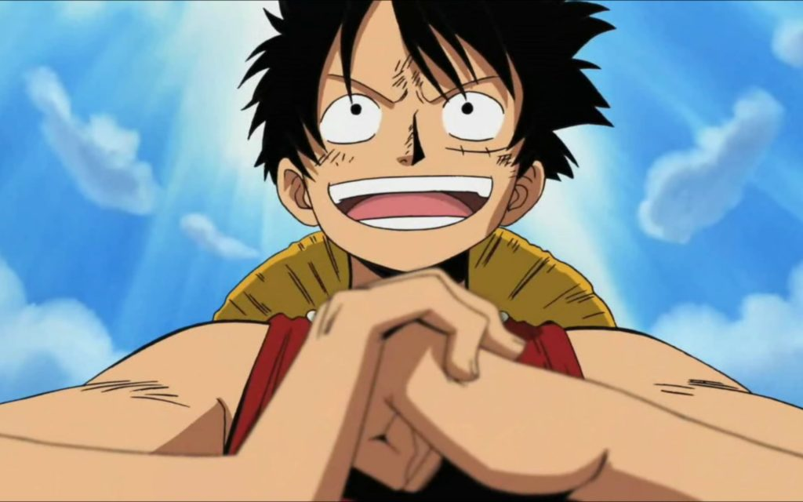

Monkey D. Luffy
Captain of The Straw Hat Pirates

Age: 19
Goal: To Be King of the Pirates
Current Bounty: 1.5B Berries
First Mate: Zoro
Navigator: Nami
Sniper: Usopp
Cook: Sanji
Ship Doctor: Chopper
Archaeologist: Nico Robin
Shipwright: Franky
Helmsman: Jimbei
Luffy grew up with mountain bandits in Foosha Village where his Grandfather, Monkey D. Garp, would stop by on occassion and do dangerous things to Luffy, such as throwing him into a ravine, to make him grow stronger so he could become a Navy Admiral.
However, Luffy had other ideas of being a pirate, an idea that Garp further punished him for. Luffy's ambition only grew stronger after meeting, and being saved by, Red Hair Shanks. This
was also around the time that he accidentally ate the Gum-Gum Fruit that Shanks had brought with him after an uneasy confrontation with another mountain bandit group. After eating this
fruit, he lost his ability to swim but gained the ability to stretch out his body as if it were rubber. Luffy tried to confront the other mountain bandits on Shanks' behalf but got beaten
, as he was a kid. Shanks and the rest of the Red Hair Pirates showed up to save him but the leader of the mountain bandit group got away, using Luffy as a hostage. The mountain bandit
made his escape by boat out to sea, where he tossed Luffy overboard where he would drown. Just as the mountain bandit was laughing maniacally on his boat, a sea monster showed up and
ate him. Luffy, still splashing and struggling to stay afloat, became the sea monster's next target. Just as the sea monster was about to eat him, Shanks showed up and saved him, losing
an arm in the process. When the sea monster circled around to charge him again, Shanks gave him a glare that scared the monster off, presumably using his conqueror's haki to do so. Because of this
incident, Luffy promised he would find a crew and become the Pirate King at the docks where the Red Hair Pirates were about to depart from. Shanks, then, gave him his Straw Hat that was given
to him from the former Pirate King, Gol D. Roger, as a promise that Luffy would one day come return the hat to him when he's become a great pirate.